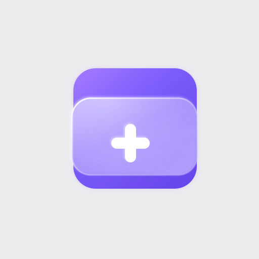
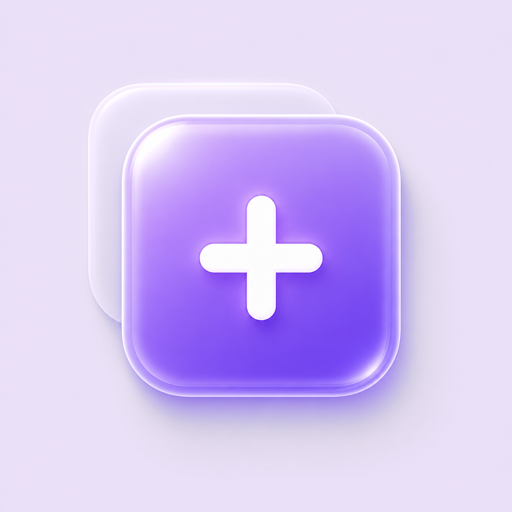
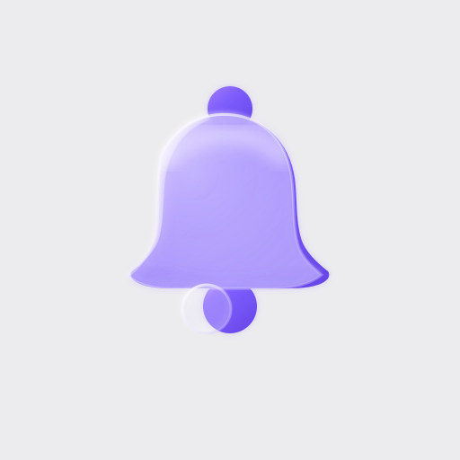
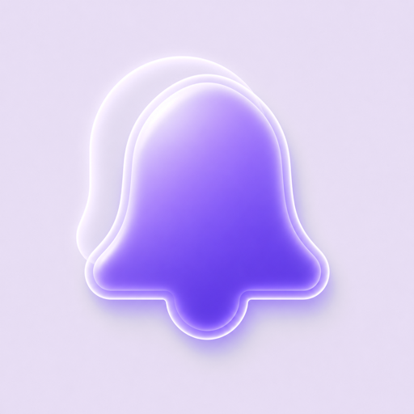

글래스모피즘 아이콘 — 슬라이드 12
타일 뒤 색상 조정본
저장(＋) · 분석(돋보기) · 회수(종) · 챗(말풍선) · 각 512×512 · 배경 라이트그레이 → 소프트 라벤더
Before → After
배경/글래스 색을 슬라이드 라벤더 톤으로 자연스럽게
저장 ＋

→

분석 돋보기
→
회수 종

→

챗 말풍선
→
왼쪽 = 원본(회색 배경) · 오른쪽 = 조정본(라벤더 배경 + 글래스 라벤더 틴트). 채도 높은 퍼플 글리프와 흰 플러스는 그대로 보호.
조정본 — 원본 크기
120px
저장 ＋
분석 돋보기
회수 종
챗 말풍선
실제 슬라이드 타일 크기
흰 배경(양식) vs 라벤더 타일(p16-tile)
흰 배경 위
저장 34
분석 46
회수 46
챗 46
라벤더 타일 위
저장 34
분석 46
회수 46
챗 46
라벤더 배경본이 라벤더 타일과 거의 이음새 없이 붙습니다. 슬라이드엔 기존 타일 배경을 빼고 이 이미지를 얹거나, 타일 배경톤을 이 라벤더로 맞추면 자연스럽습니다.
Analysis (히어로 배경 위)
Analysis는 퍼플 히어로 밴드 위에 놓여, 라벤더 배경이 여전히 살짝 밝게 뜹니다. 이 자리만
투명 배경 + 흰 글리프
버전으로 따로 처리하는 게 가장 깔끔합니다.
다음 단계
1. 이 조정 방향 OK? (더 진하게/연하게 틴트 조절 가능)
2. Analysis 히어로용 흰/투명 버전 별도 처리
3. 슬라이드 12의 인라인 SVG 4개를 이 이미지로 교체